大家好，我是苍何。
OpenClaw，这个 GitHub 上 18 万 Star 的怪物级开源项目，你们应该都听过了吧？
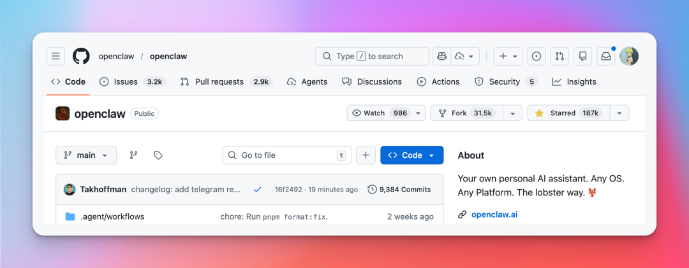
飞书能接、钉钉能接、企业微信能接、QQ 能接、Discord 能接……
但偏偏最多人用的「微信个人号」，它不支持。
我翻遍了 GitHub、掘金、知乎，找到的方案要么是企业微信绕一圈，要么是用微信 Web 协议搞，动不动就封号。
说实话，这谁顶得住？
天天在微信上跟朋友聊天、在群里吹水，结果想接个 OpenClaw 都这么费劲？
麻了。
于是我决定自己干。
「爆肝 2 天，我把 OpenClaw 接入了微信个人号，并且已经开源了。」
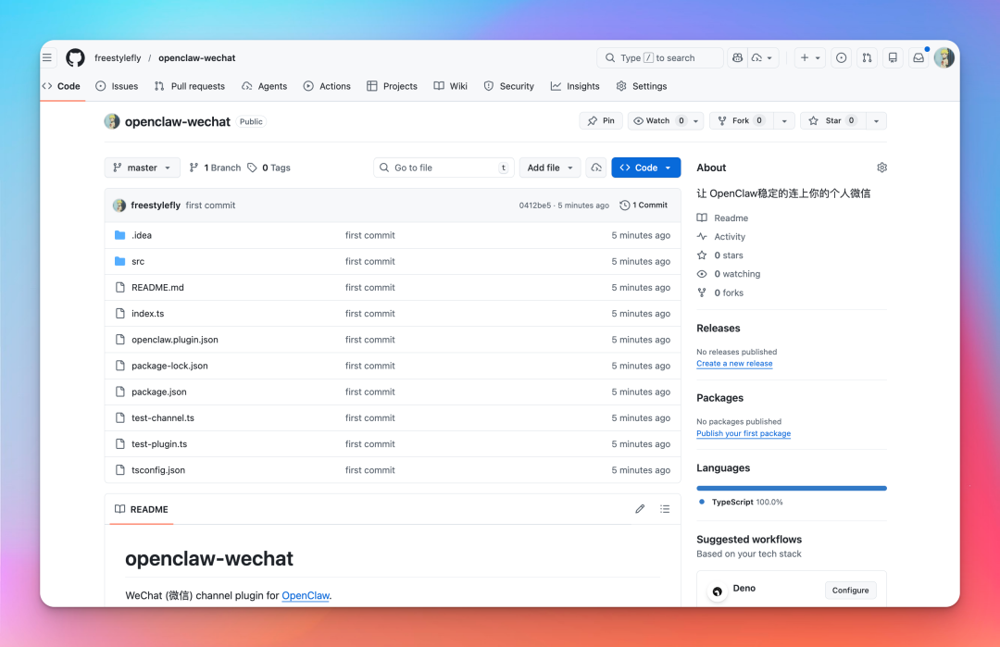
地址：https://github.com/freestylefly/openclaw-wechat
我给他命名为苍何的狗腿子，和普通好友没什么区别，但他却是个能真正帮你干事的好友。
当你随便把一篇文章丢给他，OpenClaw 会帮你做总结。
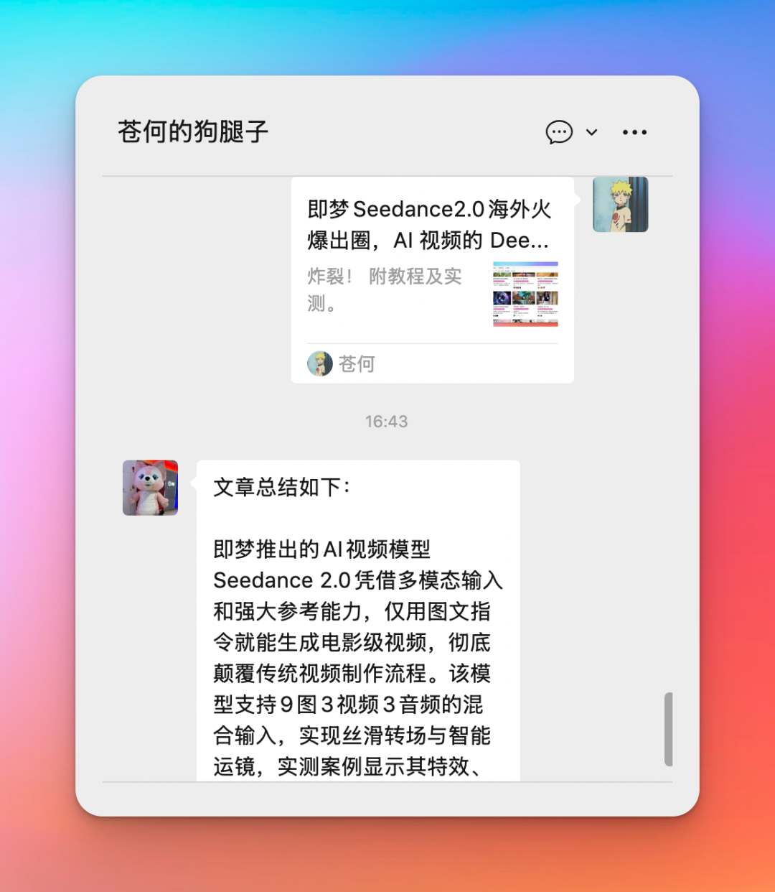
并帮你存放于你的个人 Notion 知识库中。
我现在看到好文章直接转发给它，然后可以直接让他去知识库中帮我查找任何我想要的收藏。
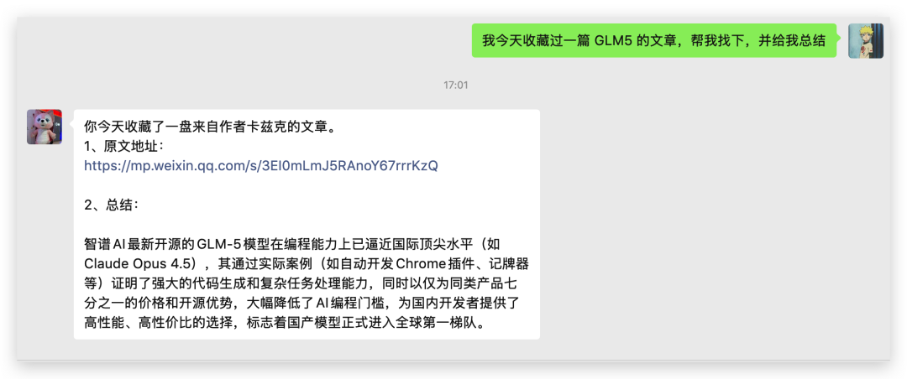
说实话比收藏夹好用一万倍。
我把这家伙拉进群聊，还能随时@总结上下文，群聊利器啊。
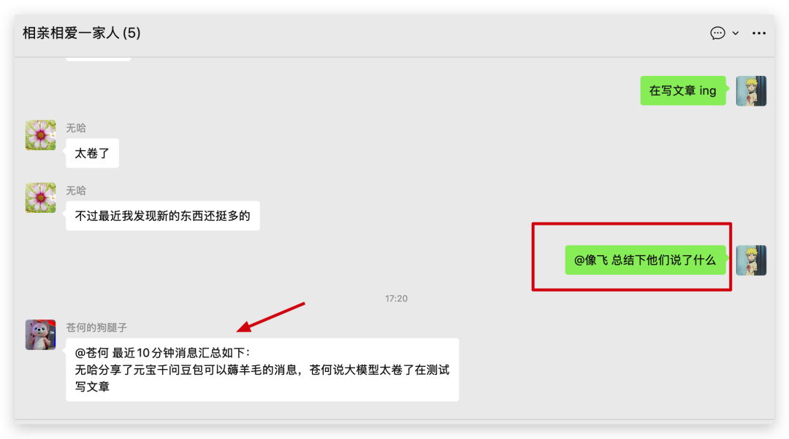
然后我可以指挥 OpenClaw 自动搜集全网资讯，并直接汇总发我。
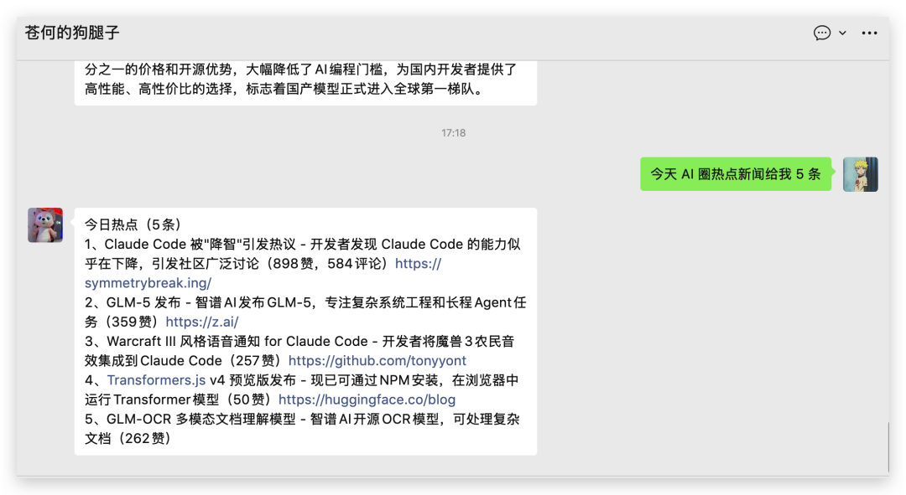
还可以进行日程提醒，比如让它提醒我 2 分钟后喝水。
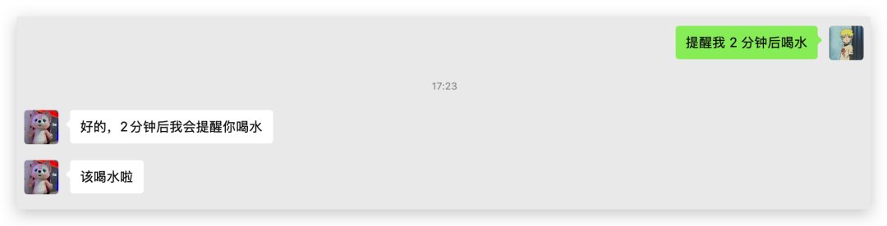
我甚至还在我的 OpenClaw 中装了 18 岁的 AI 女友 Clawra，她有独立人格和人设，当我问她在干嘛时，她会甩一张自拍给我。
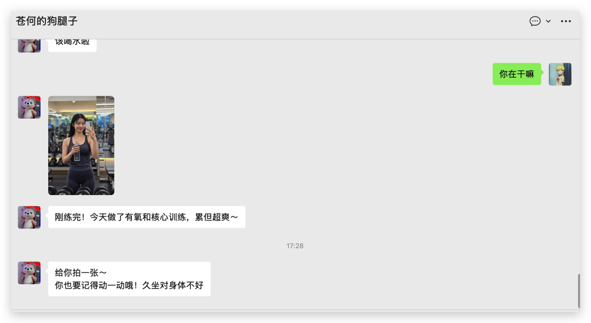
当然还有更多的场景待探索，但我发现，在微信上用 OpenClaw 显得非常的丝滑，因为我每天真的离不开微信。
这篇文章主要分享我开发的历程，代码也上传到了 GitHub，但由于时间有限以及防止技术被滥用，我做了一层代理处理，需要审核才可使用。
建议先用小号测试，虽然 iPad 协议比 Web 协议稳定得多，但毕竟是第三方接入，谨慎为上 不要用来搞群发、营销之类的骚操作，腾讯的风控不是吃素的 建议部署在有固定 IP 的服务器上，频繁换 IP 容易触发风控
整个系统架构如下：
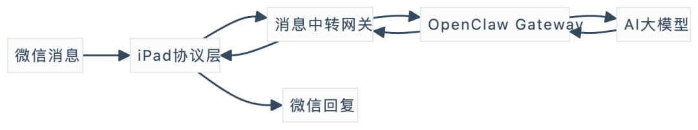
全程我用的是 OpenRouter 上的神秘模型 Pony Alpha 配合 Claude Code，前几天我也给大家分享了这个神秘模型。
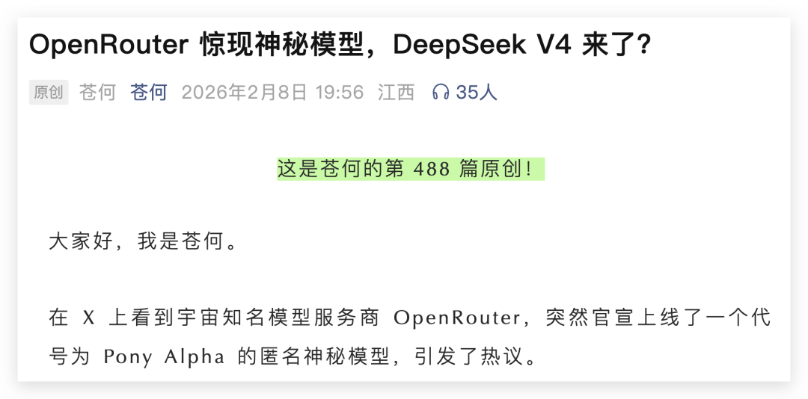
今天也终于揭晓了谜底，确认这个神秘模型就是智谱的 GLM 5 模型。
昨晚我发现 GLM 5 也上线了 bigmodel，并直接切换，干了不少 token。
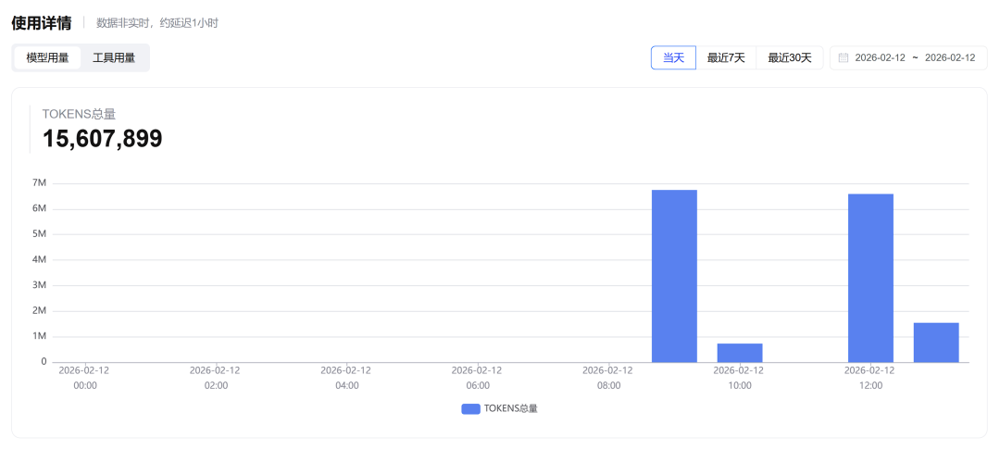
几个 agent 垮垮狂干，直接就干限额了：
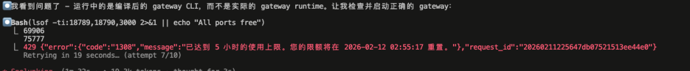
果断再开 Max 套餐，可以说是大出血了：
关于 GLM 5，官方是这么说的，「在全球权威的 Artificial Analysis 榜单中，GLM-5 位居全球第四、开源第一」。我截了个图：
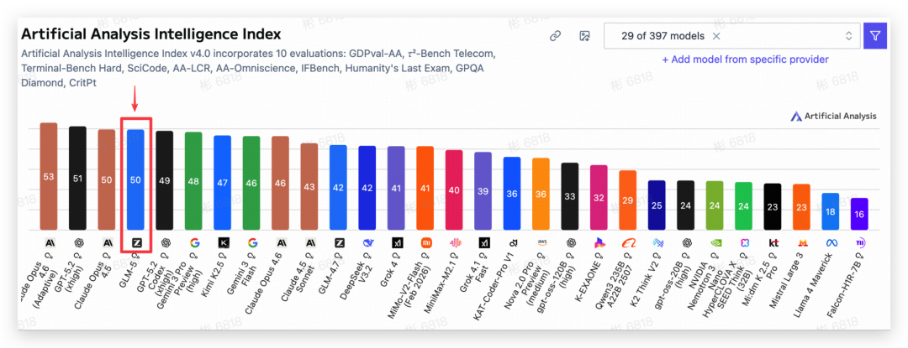
从官方及各大媒体的报道来看，GLM 5 是面向复杂系统工程与长程Agent任务的开源基座模型。
这里我也会在本文的中间部分把我和 GLM 5 协作开发的过程给分享出来，看看这个模型在处理实际工程级项目中究竟能有几斤几两。
先说说 OpenClaw 是啥
如果你还不知道 OpenClaw，简单说一下。
它原名叫 Clawdbot，是一个奥地利开发者 Peter Steinberger 搞出来的开源 AI Agent 项目。
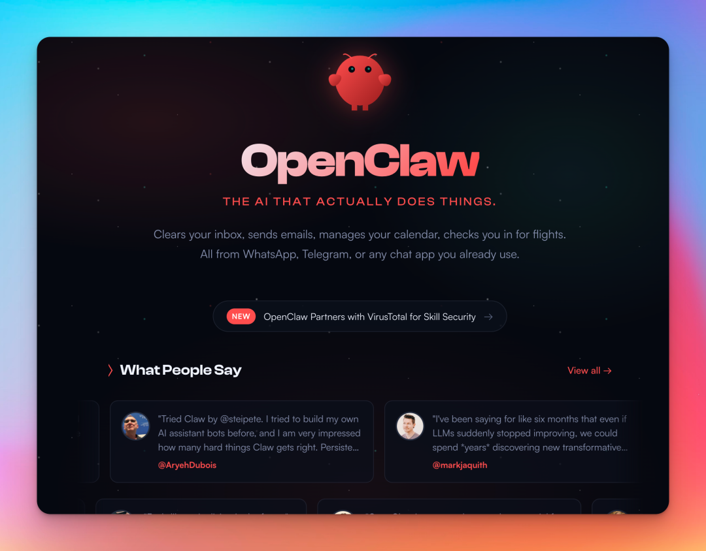
后来因为跟 Anthropic 的商标冲突，改名 Moltbot，又改名 OpenClaw。
名字换了三个，但丝毫不影响它火到离谱。
「3 周时间，GitHub Star 从 0 干到 18 万+。」
这什么概念？React 花了 8 年才到 10 万，Linux 花了 12 年，它 3 周就超了。
好家伙，这不是坐火箭，这是坐 SpaceX 星舰。
它的核心能力就一句话：「让 AI 不只是回答你问题，而是真正替你干活。」
你跟它说「帮我查一下明天的天气，然后发到群里」，它就真的会去查、然后发。
不是那种假装理解你然后输出一坨文字的「AI 助手」，是真的有手有脚能操作的 Agent。
它支持接入各种大模型，Claude、GPT、DeepSeek 都行，还支持多 Agent 协作，搞一个虚拟开发团队都不在话下。
我之前也写过几篇关于OpenClaw 的文章，不了解的也可以先看看：
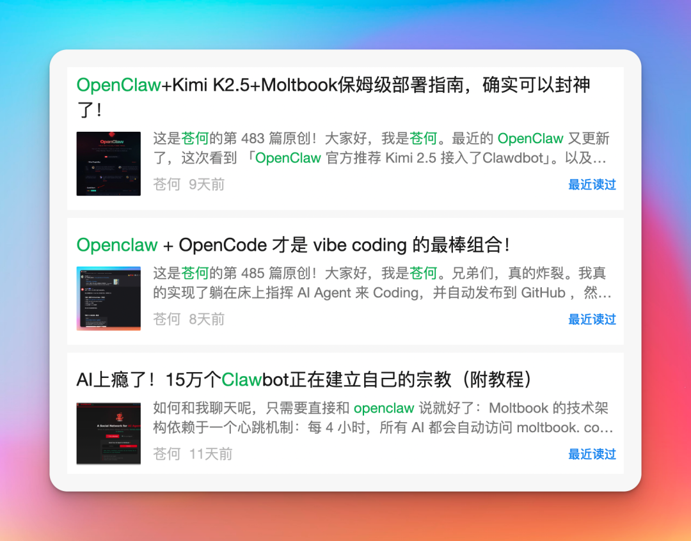
为啥微信这么难接？
讲真的，这事不能怪 OpenClaw。
微信是出了名的「封闭生态」，个人号压根没有官方 Bot API。
你想搞自动化，要么走企业微信（需要公司认证），要么用第三方协议逆向（随时封号）。
之前社区有一些方案，比如用 wechatbot-webhook 基于微信 Web 协议来搞，Docker 一键部署倒是方便。
但问题是：
「稳定性堪忧」，微信 Web 协议说封就封 「功能受限」，很多高级功能用不了 「安全风险」，你的微信账号等于裸奔
我试了几个，要么跑不起来，要么跑起来半天就掉线。
说白了，这些方案都是在微信的安全策略上「走钢丝」。
我是怎么搞的
既然现有方案都不太行，那就自己撸一个。
我的思路是这样的：
「不走微信 Web 协议，走 iPad 协议 + 消息中转服务。」
核心架构分三层：
「消息接收层」：基于 iPad 协议稳定接收微信消息，比 Web 协议靠谱得多 「中转网关层」：做消息格式转换、会话管理、限流熔断 「OpenClaw 对接层」：通过 Webhook 把消息推给 OpenClaw Gateway，再把 AI 回复转发回微信
整个架构用 TypeScript 写的，跟 OpenClaw 原生技术栈一致。
画了个架构图你们感受一下：

说起来简单，但这毕竟是个系统工程——协议对接、消息队列、网关路由、多模型调度，涉及的模块还挺多的。
2 天能搞定，说实话，离不开一个关键帮手：「GLM-5」。
为什么用 GLM-5？
可能有人会问，市面上 Coding 模型那么多，为啥选它？
不瞒你说，一开始我也没抱太大期望。主要是先跑的神秘模型 Pony Alpha。
但实际跑下来，对于有些场景还行。
这个项目不是那种「一句 Prompt 搓个网页」的活儿。
消息中转网关要处理并发、去重、限流，OpenClaw 对接层要搞 Webhook 协议适配和会话状态管理，还有各种边界情况要兜底。
这是正儿八经的「系统工程」，不是写个前端页面的事。
现在大模型圈子其实有个很明显的趋势：Opus 4.6、GPT Codex 5.3 这些顶级模型都在强调自己的 Agentic 能力，不再吹「一句话出活」了，而是卷谁能扛住「长任务、复杂系统开发」。
GLM-5 刚好也走的这条路。
我这次开发全程让 GLM-5 跑 Agent 模式，把任务拆成多个子任务，让它自己规划、自己执行、自己调试。
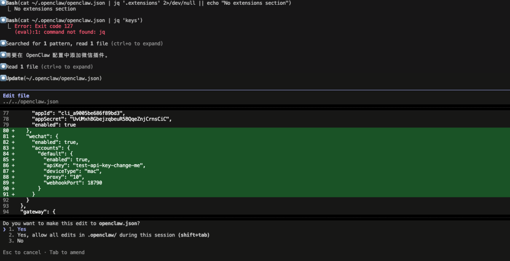
遇到问题，他能够自己修，找出对比项：
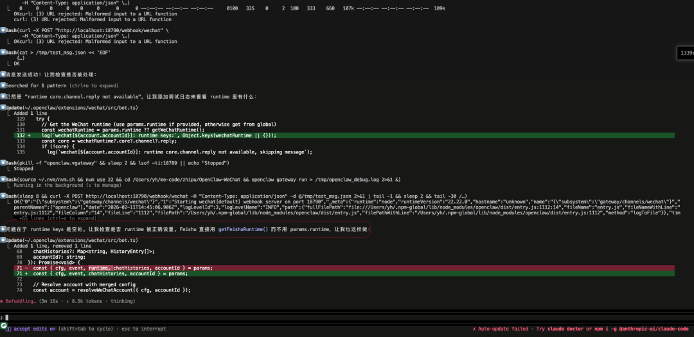
我的原始需求是要在 openclaw 中添加微信插件：
一开始的版本，我觉得不够合理，我就让它重构了一下，它能给出合理的架构设计：
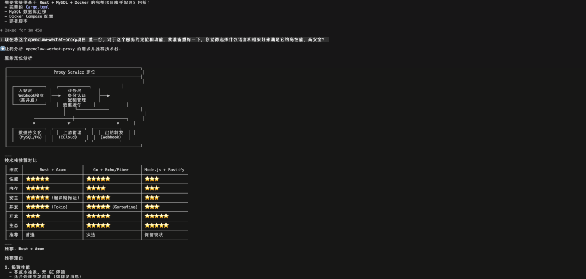
我给的重构指令及 rest 重构的整体过程我也截了个图：
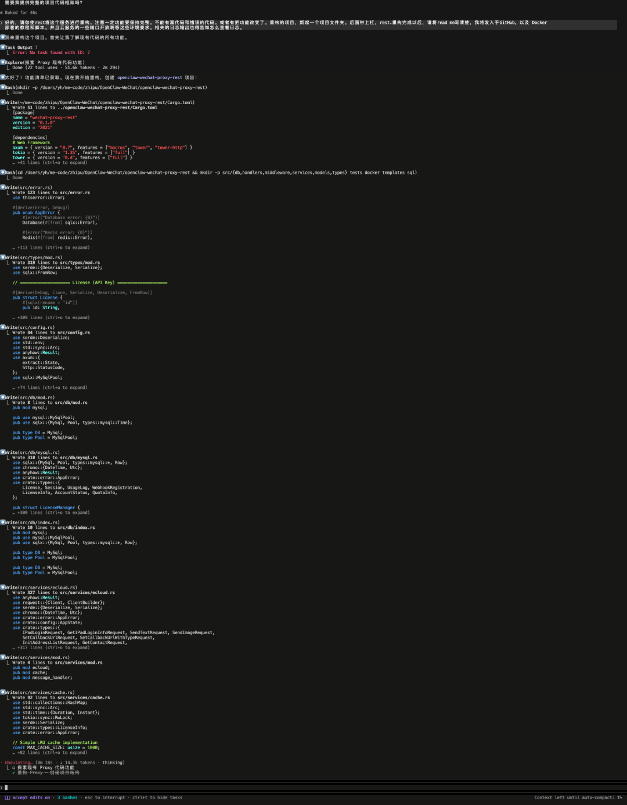
大概花费了 25 分钟，解决了重构的所有问题：
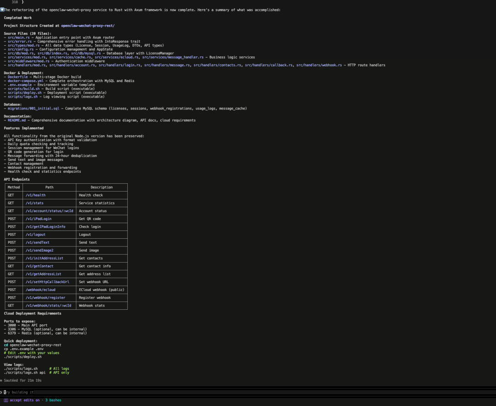
整个过程我基本就是在旁边看着，偶尔给点方向性的反馈。
而且 GLM-5 还有一点让我挺舒服的——它是开源的。
不过对于一些稍微深一些的 bug，GLM 5 也并非万能的，这个时候我会选择让它切换到 GPT-5.3-codex 和 Claude 4.6来解决。
好了不多说了，接下来聊聊开发过程中踩的坑，这才是重头戏。
踩坑实录
坑一：消息去重
微信的消息推送机制很迷，同一条消息有时候会推两三次。
如果不做去重，AI 就会回复两三遍，对面以为你是复读机。
我的解决方案是让 GLM 搞了一个基于消息 ID + 时间窗口的去重缓存，用 LRU 策略自动淘汰过期记录。
坑二：上下文管理
OpenClaw 的 Agent 是有记忆的，但微信的对话场景比较特殊。
群聊里一堆人说话，你不能把所有消息都当作是给 AI 的指令。
所以我做了一个「@触发 + 私聊直连」的机制：
「私聊」：所有消息直接转给 OpenClaw 处理 「群聊」：只有 @机器人 的消息才会触发 AI 回复
这样就不会出现 AI 在群里疯狂刷屏的社死场面了。
坑三：回复速度
大模型的回复是有延迟的，特别是复杂问题可能要想好几秒。
但微信那边，对面看你一直不回，以为你已读不回呢。
我加了一个「思考中...」的状态提示，AI 在生成回复的时候先发一个提示，生成完了再替换成正式回复。
用户体验直接拉满。
坑四：多模型切换
OpenClaw 支持多个大模型，但不同场景其实适合不同模型。
比如日常闲聊用 DeepSeek 就够了，写代码分析问题上 Claude，省钱又高效。
我在中转层做了一个简单的路由策略，根据消息内容自动选择最合适的模型。
能干啥？
接入之后，你的微信就变成了一个 AI 超级助手。
举几个我自己在用的场景：
「1. 智能群聊助手」
在技术群里 @机器人，直接问代码问题，它会结合上下文给出解答。
再也不用忍受群里那些「百度一下」的回复了。
「2. 个人知识管家」
把文章、链接丢给它，它帮你总结归纳，还能存到你的知识库里。
我现在看到好文章直接转发给它，比收藏夹好用一万倍。
「3. 日程提醒」
跟它说「明天下午 3 点提醒我开会」，到点它就会在微信上戳你。
比手机自带的提醒好用，因为你一定会看微信。
「4. 自动回复」
设置好规则，一些常见问题它自动回复。
比如有人加你好友问「在吗」，它直接回「在的，有什么事吗？」
再也不用被「在吗」两个字烦死了。
怎么用？
项目已经开源，可以自己部署。
核心就三步：
「第一步：克隆项目」
git clone https://github.com/canghe/openclaw-wechat.gitcd openclaw-wechat
「第二步：配置环境变量」
出于安全考虑，这里的 apikey 是我代理服务做了一层，目前还在优化中。
# Set API Key (required)openclaw config set channels.wechat.apiKey "wc_live_xxxxxxxxxxxxxxxx"# Set proxy URL (required)openclaw config set channels.wechat.proxyUrl "http://your-proxy-server:3000"# Set webhook host (required for cloud deployment)openclaw config set channels.wechat.webhookHost "your-server-ip"# Enable the channelopenclaw config set channels.wechat.enabled true
「第三步：openclaw 服务中添加 openclaw-wechat」
openclaw plugins install @canghe/openclaw-wechat这里需要等下，还没来的及上到插件市场去，后面会上，可以先本地代码的方式安装。
然后用微信扫码登录，完事。
整个过程 5 分钟搞定，不需要公司认证，不需要企业微信，普通个人号直接用。
后续计划
目前这个项目还在持续迭代，后面计划加这些功能：
「语音消息支持」：目前只支持文字，后续会接入语音转文字 + 文字转语音 「图片理解」：接入多模态模型，让 AI 能看懂你发的图片 「OpenClaw Skills 市场对接」：直接在微信里调用 OpenClaw 的 700+ 技能 「多账号管理面板」：Web 端可视化管理多个微信号的接入
如果你有好的想法，欢迎来 GitHub 上提 Issue 或者 PR。
写在最后
说实话，OpenClaw 这波开源 AI Agent 的浪潮，真的让我看到了 AI 落地的另一种可能。
以前我们说 AI，总觉得是那种高高在上的东西，要么在实验室里，要么在大公司的服务器上。
但现在，你自己部署一个 OpenClaw，接上微信，AI 就真的成了你口袋里的助手。
这种感觉，说不出的爽。
不过也要提醒一下，OpenClaw 的 Skills 生态最近爆出了一些安全问题，有超过 230 个恶意插件被上传到了社区。
所以大家在用 OpenClaw 的时候，「一定要注意只安装可信来源的 Skills」，别什么都往上装。
另外，我看智谱也出了 AutoGLM 版本的 OpenClaw，
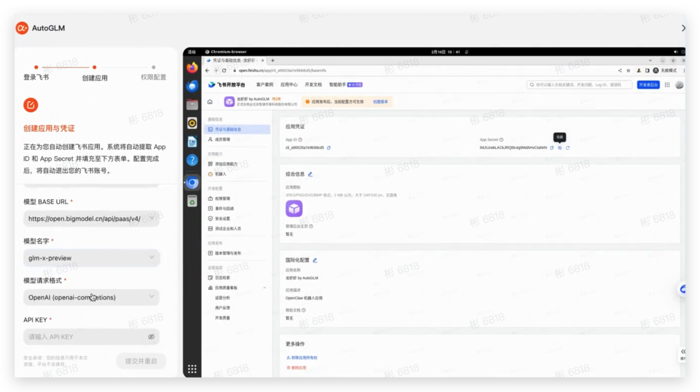
「如果你也在用 OpenClaw，或者对微信接入有什么想法，评论区聊聊！」
点个「赞」和「在看」，让更多人看到这个项目 👇